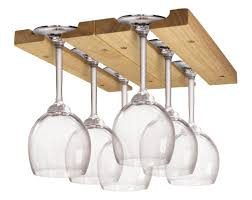
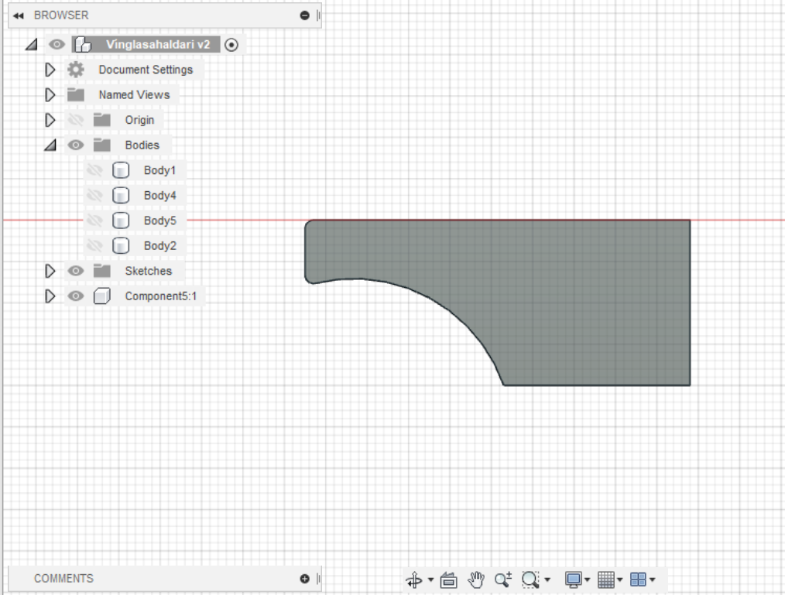

Molding and Casting
The first thing I did when I was given the assignment of creating a mold for the wine glass holders I went online to find ideas. The group liked the following idea:

Now that I knew the design I needed to know certain dimensions about a classic wine glass. I found the following image on google.
Now that I knew what I was going to create I needed to learn how to create a mold in Fusion360. I went on youtube and I found the following 3 video tutorial. Here is a link to the first one. I watched the first two videos on 1.5x speed. The idea of the wine rack is the following:
The bottom plate is where the wine glass holders will be fastened. The idea is to create a mold in a similar shape as these ones. The current idea is either to drill the molded wine glass holders to the bottom plate or glue it.
So I began by drawing the bottom plate
Then I created the form of the wine glass holders.
Now I wanted to create the mold! Note that there is only needed to create a mold for a single support and then we could simply create four supports from that mold. I started by created a box bigger than the support.
Then I used the command combine and the selected the box as the target body and the support as the tool body. The operation was set to cut. What this command did was that it used the target body as a cutting profile out of the target body. Then I checked the box "Keep Tools". That makes sure that my tool body doesn't disappear.
Then I split the box into two halves so to create a two piece mold.
Then I created a hole into the top half of the box so that material could be poured into the mold.
In the next course session I asked the tutor for comments on the mold and he pointed out that since my support has a flat surface at the bottom, it would be a much better format to put the mold upside down and keep it open. So the mold doesn't have to be a two piece. So I decided to undo a lot of changes in the timeline and went back to the part where I only had the one support selected. I began by turning the support upside down.
So instead of creating a box around the support, I decided to create a box only around the bottom and the sides. I created a sketch on the support surface and constrained it so that the support was in the middle and that the highest part of the box was collinear with the support.

Then I extruded the sketch so that it would be as long as the support.
I created a sketch on the surface of the support so I could extrude the materials 10mm more on each side. I made sure that the operation was set as "New Body" instead of "Join" because I wanted this extra material to become a part of the mold but not the support.
I used the command "Combine" to make the new material become a part of the mold.
Now when I moved the support out of the mold I could see that the mold was ready!
The only thing left to do is to cut out this mold and pour the molding material into the mold. Gravity will do its work to make sure that the top surface becomes flat.
The group decided that to fasten the wine glass holders to the wooden bottom plate we would screw it together. I decided to implement a hole into the mold for a 4mm wooden screw. I did that by creating a hole into the wine glass holder. design
After that I changed the mold accordingly and the result was the following.
The workload
- 25. February: 30 minute meeting discussing ideas
- 27. February: 1 hour meeting, choosing a design, what two main ideas from the course to use. Assign tasks to team members.
- 1. March: 2 hours, I created the website foundation
- 15. March: 2 hours, I started learnign about molding and casting and created a draft
- 22. March: 2 hours, I updated the mold design and updated my website
- 5. April: 3 hours, learning and implementing how to set up the manufacture process as well as simulating how the mold works
- 17. April: 1 hour and 30 minutes, updating the mold for the screw holes
- 22. March: 2 hours, completing the manufacture process, screen record it and update the website
- Total so far: 12 hours and 30 minutes